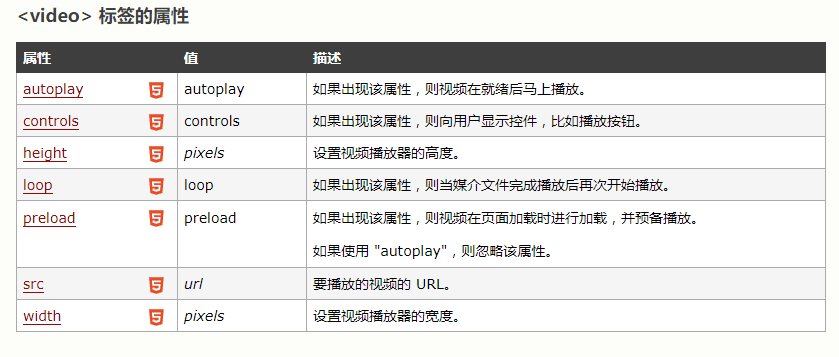

直到现在，仍然不存在一项旨在网页上显示视频的标准。 今天，大多数视频是通过插件（比如 Flash）来显示的。然而，并非所有浏览器都拥有同样的插件。 HTML5 规定了一种通过 video 元素来包含视频的标准方法。
当前，video 元素支持三种视频格式： 格式 IE Firefox Opera Chrome Safari Ogg No 3.5+ 10.5+ 5.0+ No MPEG 4 9.0+ No No 5.0+ 3.0+ WebM No 4.0+ 10.6+ 6.0+ No Ogg = 带有 Theora 视频编码和 Vorbis 音频编码的 Ogg 文件 MPEG4 = 带有 H.264 视频编码和 AAC 音频编码的 MPEG 4 文件 WebM = 带有 VP8 视频编码和 Vorbis 音频编码的 WebM 文件